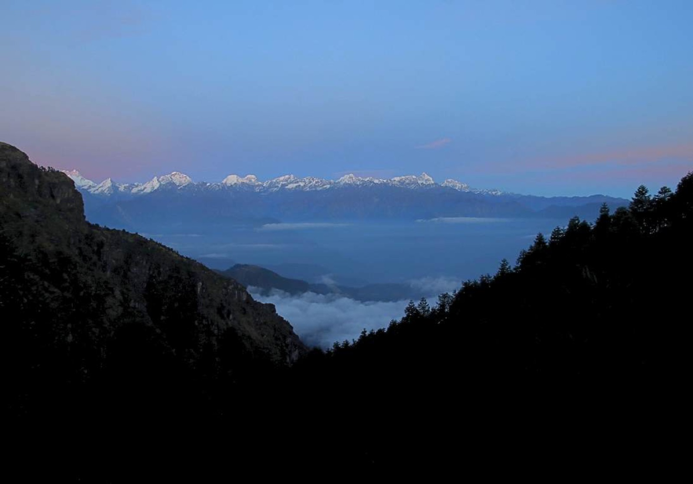

I write code.

$ cat README.md
Hello, I’m Diwas.
I’m a software engineer and photographer from Nepal, currently studying in San Marcos, Texas. My day involves a lot of brackets, semicolons, and the occasional production incident. Photography is the opposite of all of that — analog instinct, no undo button, and a world that refuses to refactor itself for you.
I build for the web, troubleshoot for fun on the Tech DD Twins channel with my twin, and shoot to remember — mostly people, mountains, and the in-between hours when a city decides what it wants to be that day.
> whoami
diwas pandit
> stack
react · node · postgres · a 50mm prime
> status
open to freelance & internships
- 2018 Led a student team raising funds and relief for fifty-plus tornado-hit households in southern Nepal.
- 2019– Co-creator of Tech DD Twins — tech troubleshooting on YouTube.
- ✱ A camera is a small excuse to show up for people.
$ git log --oneline --graph
Commit history.
- ace0f8a (HEAD → texas) study: undergraduate — Texas State University, San Marcos now
- f22cede (tag: meta-frontend) cert: Meta Front-End Developer Certificate
- c0ffee1 (tag: tech-support) cert: Tech Support Specialist Certificate
- ca5cade feat(studio): Incubate Nepal application — one-person production: laptop, lamps, a whiteboard 2023
- 5a1ute5 learn: St. Xavier’s College, Kathmandu — rural immersion, community first
- 1n17d0c init: Tech DD Twins — YouTube channel with my twin brother 2019
$ cat stack.json
Tools I trust.
{
"languages": ["JavaScript", "Python", "HTML", "CSS"],
"frameworks": ["React", "Node", "Express"],
"data": ["MongoDB", "PostgreSQL"],
"tools": ["Git", "Microsoft 365"],
"camera": { "glass": "50mm prime", "sensor": "one good eye" },
"freelance": true
}ROLL 26 · CONTACT SHEET
The other half.
Frames from Nepal and the USA — mountains that wake up early, cities that refuse to sleep, and people who make both worth photographing.
Want the full darkroom? Visit the photography portfolio →
$ open a channel
Say hi.
Freelance, internships, photo walks, or a stubborn bug you can’t reproduce — my inbox is open.